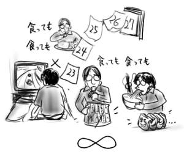

ポケモンカードのはまんじであってナチスの鈎十字ではないわけで、もちろん左右回転が逆なわけですがそこのところ理解していただきたいと全ての人が思ったと思います。古いネタを持ち出してなんだというと、SWASTIKA(鈎十字) EYESが収録されたプライマルスクリームの『エクスターミネータ』なのです。ケミカルブラザーズなどのビート力を外注で大注入、このビートUK！という感じのバレットなビートが全編でガンガンなわけですが、先行シングルの「SWASTIKA EYES」は、もちろん「out of control」をモロにイメージ喚起なわけであり、気がつくと結局、外注先であるところの『サレンダー』を聞いてたりするわけでなんとも意味不明であります。いや、そう言い切ったものでもないのですが。
お久しぶりでした。
この2週間は死んでいたのですよ。リビングデッド。
すなわちリビングダイイングキッチンであり、リビングで背中から刃物で！しかも密室！
みなさんこれは新本格ですよ。
SweepStationものの第三弾であるところの『Beat Planet Music』がひっそりと発売になっていたりしました。今回『DEPTH』よりも圧倒的に音ネタが増加しており、かと言って『グルーヴ地獄V』のようなどれを組み合わせても猛烈ミニマルに！ということもない幅広さです。新しい要素として、パターン同士を組み合わせて新しいパターンを作るFUSION機能、パターンを鳴らすタイミングを８分音符単位で設定できるノーツ、パターンの逆再生などを設定できるスイッチ、音楽CDから約6秒程度のサンプリング、などが挙げられると思います。
これによって組み合わせは1億通り以上！(むかしのボールが迷路を脱出するゲームみないなノリで)という無限系ゲームへと深化しています。音ネタには有名どころもちらほら。音版KPT。
音ネタ集めの部分は、地球上に張り巡らされたネットワーク(3Dコース)を音楽に合わせてボタンを押しながら進むという割とウザいものに。コースは『WipeOut』とか『IS(Internal Section)』のようなサイケデリックな電脳絵巻でネットワーク感を演出。コースの起点と終点としてステーションがあり、そこでセーブとかソングエディットとかいろいろ出来るようになっています。ですがステーション毎に居るステーションマスターと呼ばれる奴らの存在が割と不明。
なんでそんなデザイン？誰のための？
とか言いつつボタン押しながらコースをウンウンと進むのは、その度に音が鳴るので割と楽しい感じ。ステーションに着く度に流れるマスター登場ムービー以外はカッコイイですが、飛ばせるので問題ないです。
○ボタンに躊躇がない人向け。
しかし、CMもしていないし全然売る気なさそうですが、後で変に人気が出ても悔しいので一応書いておきました。
休日に、ぶらりと大宮LOFTに出向いたら、うまい棒が30本パックとかで売っているではないですか。子供の夢うまい棒！ドラ風の生き物がマスコットキャラクタのうまい棒！チョコ棒アイスはうまか棒です。類似！大学生になって以来、子供の頃の制限をふっきるかのように"大人の財力"と称して全種類衝動買い！などの太っ腹で威勢のいい買い方を実施しておきながら「どの順番で食べるか」に思い悩むなど、体が大人で中身が子供である人には避けて通れない悪魔の菓子であると言えなくもないです、うまい棒。
問題は30本全種類詰め合わせパックなどなく、一種類ずつみっちりと30本詰めされていることであり、どの味を購入すべきかを延々悩んで悩んで悩み抜いて"メンタイ味"を購入したのですよ。
食べ終わるのに一週間半かかったよ！食べても食べても食べても減らないメンタイ味！
なお、哲日記の1/19分と併せてお楽しみ下さい。
ついでにトムヤムラーメン(輸入品)も一緒に買ったらこれが辛くて酸っぱくてうまくて仕方がなかったので、翌日みっちり買い込んで来たら、２個で飽きました。残りのトムヤムラーメンどうしよう！食べても食べても！
カレーといい、BPMといい、うまい棒メンタイ味といい、トムヤムラーメンといい、無限系はもうたくさんです(未解決)。いや、BPMはOKです。
我が輩も御多分にもれず、『ケロロ軍曹』を毎晩読み返しているであります！